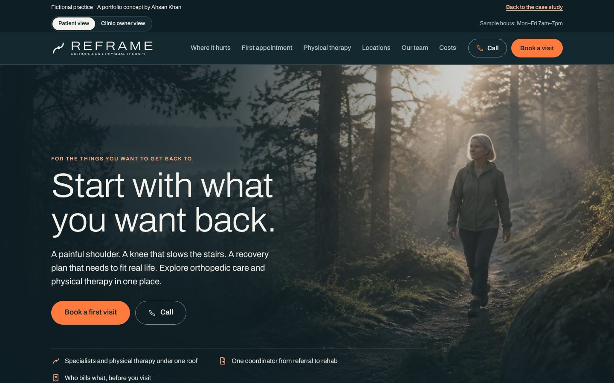
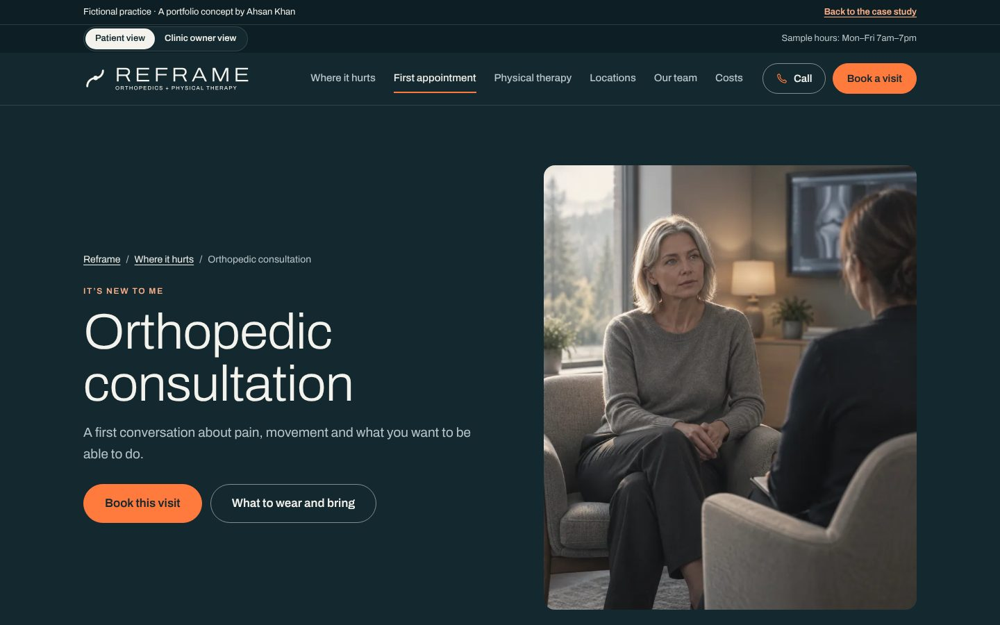
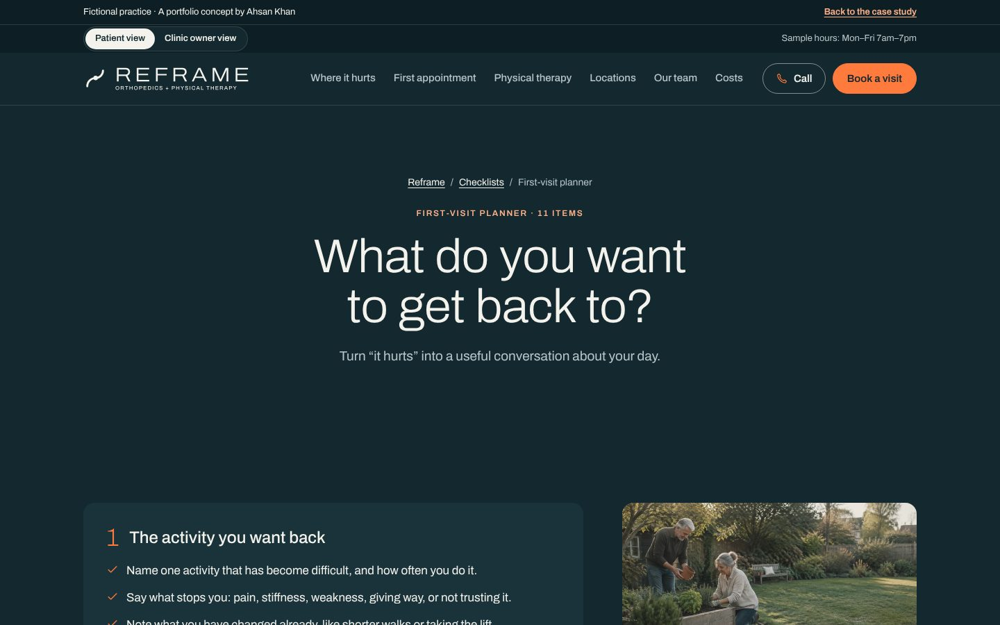
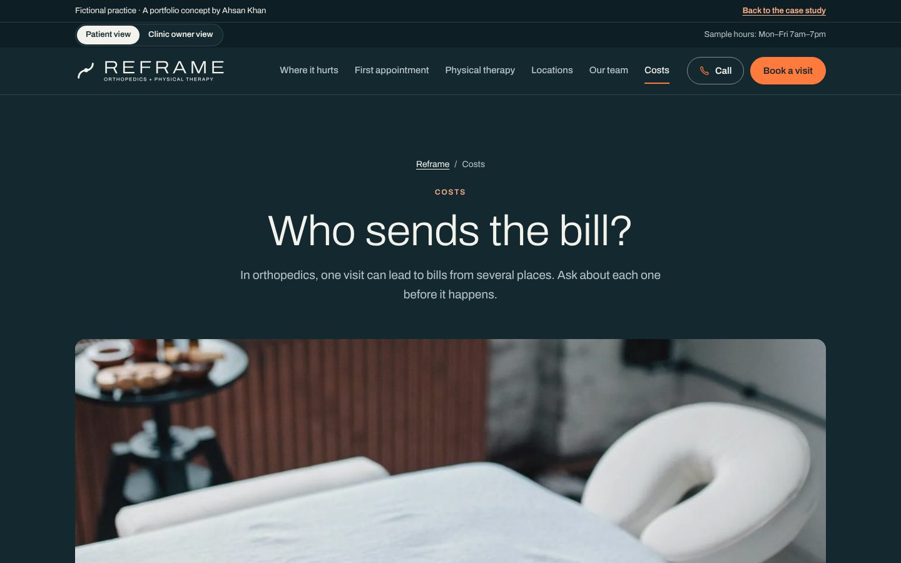
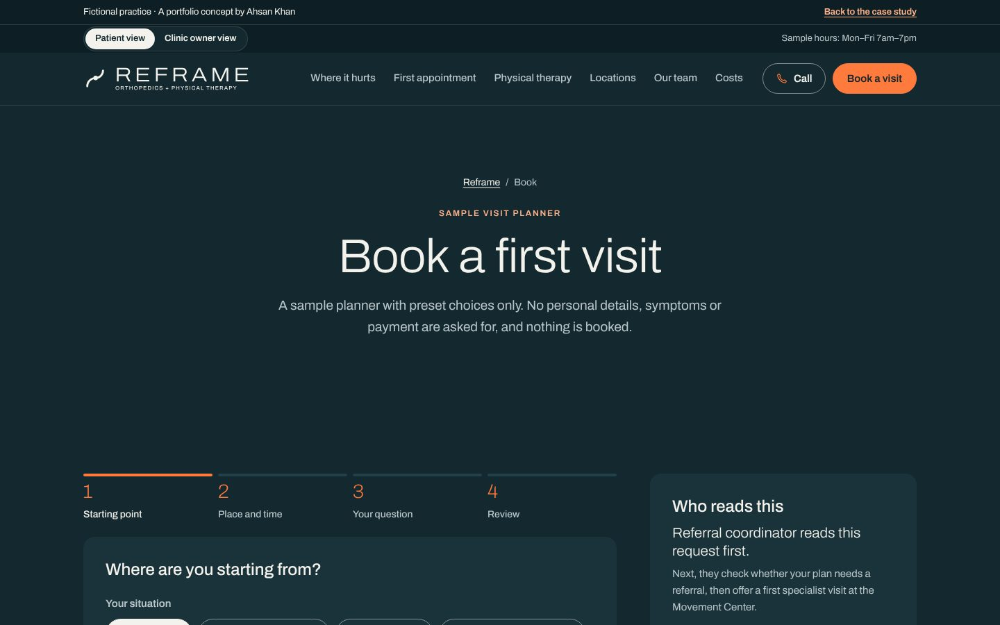
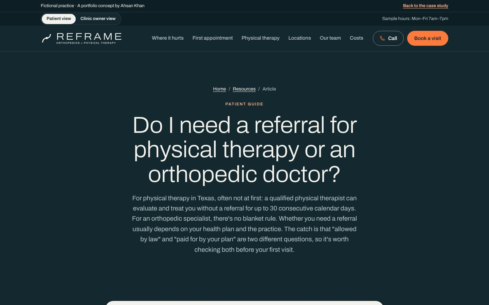
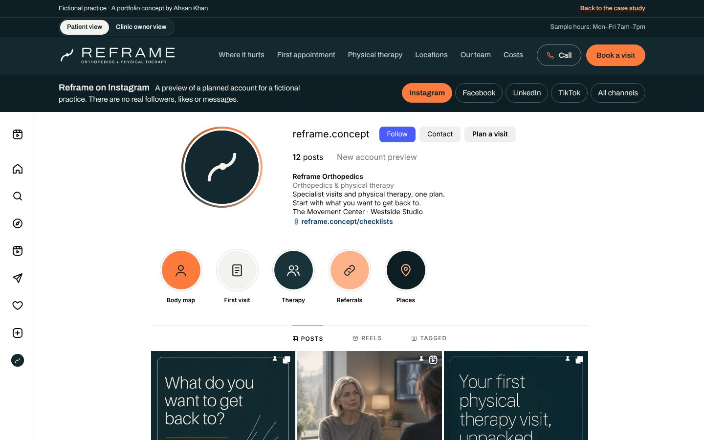
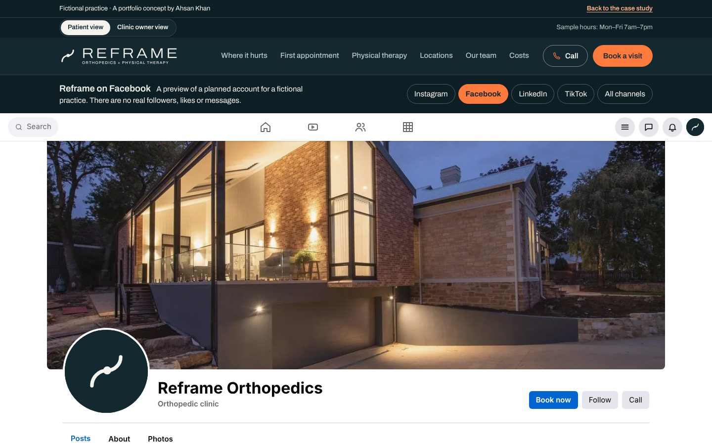
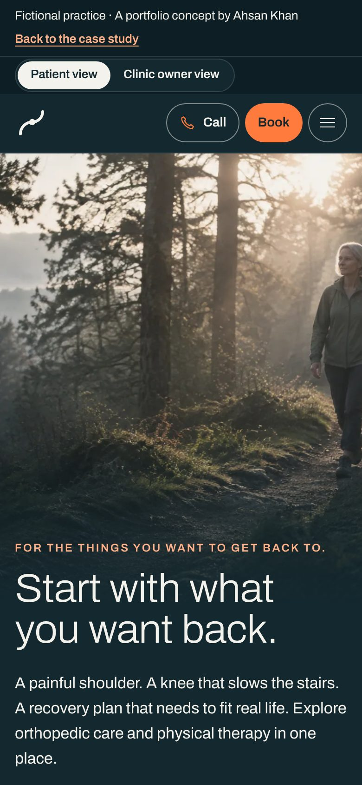
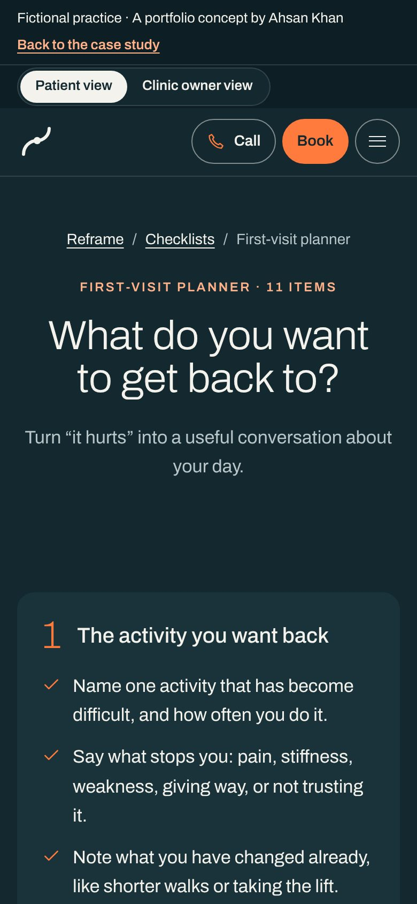

03Fictional healthcare brand · Content, design & build
Connect the first concern to the next recovery step.
One patient line, followed from a generic start to the live page.
Scroll: write, design, build
Reframe Orthopedics is an original fictional brand. OrthoVirginia was a research reference, not a client. No patient research, clinical review, live integration or measured campaign result is claimed.

01Write
The line any clinic could use.
It sells solutions. Someone whose knee slows the stairs finds nothing in it.
The first draft: Advanced orthopedic solutions for every lifestyle.
AK · 01Generic is easy to skip.
Then name what they want back.
The stairs, the shoulder, real life. Start there, and the visit has a reason.
The rewrite: Start with what you want back.
02Design
Put the next step in reach.
Grey boxes first. The want-back line on top, one booking action, the body map below.
AK · 02Process facts, never outcome numbers.
Make it feel like Reframe.
Deep ink, tangerine and bone. Archivo, set light. An early-morning trail.
03Build
Ship the real page.
One of 25 pages. The body map has a button twin for keyboards.
AK · 03Live. Try the body map.

- 01Write
- 02Design
- 03Build
I wrote it, designed it and built it.
From the first click to the front desk, you talk to me.
Try the body map ↗For the curiousThe video, the full kit, every version and how it was checked
- Project
- Independent fictional practice
- Role
- Research, content, brand direction & build
- Deliverable
- 25 pages · 4 social profiles · Body map
- Tools
- HTML, CSS & JavaScript · its own static generator
The kit: what Reframe Orthopedics shipped, beyond the pages
Reality checkThe real market, references and rules behind a fictional practice
Modeled on · Austin, TX
Central Texas is still adding residents, and its orthopedic market already includes long-established private groups and an academic institute. A new practice has to explain where a patient should start, especially since Texas lets some physical therapists treat for a short time without a referral.
- Austin reached 1,002,632 residents in 2025, up 4,025 from July 1, 2024 (City of Austin, citing Census Bureau estimates). Source ↗
- Travis County's median age was 35.8 and its median household income was $97,013 in 2024 (ACS 1-year estimates). Source ↗
- Since September 1, 2025 (HB 4099), a qualified Texas physical therapist may treat without a referral for up to 30 consecutive calendar days, up from 10 business days (Texas Board of Physical Therapy Examiners). Source ↗
Real
- OrthoVirginia, Texas Orthopedics and UT Medicine's Musculoskeletal Institute as public-site references (no affiliation)
- The Austin and Travis County figures above
- Texas PT direct-access law, Texas Medical Board advertising rules, HIPAA, Texas HB 300, Section 504 and the No Surprises Act
- The FTC rule on reviews and testimonials
- The working website and its planner
Invented
- The name Reframe Orthopedics and its brand identity
- The Movement Center and Westside Studio location concepts
- Care teams, the referral coordinator and their handoffs
- Service scope (consultation, physical therapy, injury visits, surgical planning) as offered by this practice
- The visit planner, social profiles and the "Bring the full picture" campaign
- AI-generated imagery
Real providers reviewed References, not clients
- OrthoVirginia ↗What their site does: Routes new online appointments by body area or physician, sends existing patients to MyChart, gives physician and therapy appointments separate phone numbers, and points same-day injuries to its Ortho On Call walk-in clinics.What this concept does: Reframe keeps the separate routes but adds a "help me choose" path and a referral-readiness guide, and makes no recovery-time or surgery-avoidance claims.
- Texas Orthopedics ↗What their site does: An Austin group that lists body areas (hand and wrist through spine), a physician directory, and on-site physical therapy, imaging and a surgery center "all under one roof" across several Central Texas locations.What this concept does: Reframe also pairs specialist care with therapy, but it treats an existing therapy plan as its own entry point so a returning patient does not restart the new-patient funnel.
- UT Medicine Musculoskeletal Institute ↗What their site does: An Austin team of physicians, nurse practitioners, physician assistants and physical therapists, organized into subspecialty clinics (hip and knee, shoulder and elbow, sports and injury), with online booking for new patients and a portal for current ones.What this concept does: Reframe uses the team-based framing but names roles instead of people and does not imply academic affiliation, research or on-site imaging.
Rules the marketing has to follow
| Rule | What it requires | On this site |
|---|---|---|
| Texas physical therapy direct access ↗ | Since September 1, 2025 (HB 4099), a qualified Texas PT may treat a patient without a referral for up to 30 consecutive calendar days, then needs a referral to continue. Qualifications and the board-prescribed patient disclosure still apply. | The therapy page and "Your first therapy visit" guide tell patients to confirm whether a referral is required and to bring any referral or postoperative instructions. Would need: a clear statement of whether the clinic offers direct access, which therapists qualify, and the signed disclosure step in intake. |
| Texas Medical Board advertising rule ↗ | Physician advertising in Texas must not be false or misleading. 22 TAC §164.3 (amended effective January 9, 2025) bars "board eligible"-style wording that suggests board certification, testimonials without a credentials disclaimer and disclosure of any payment, unsubstantiated claims of unique skill, deceptive fee or "free" claims, and showing models or actors without saying they are not patients. | No outcome, pain-free, recovery-time or surgery-avoidance claims; the surgical-planning page says a consultation is not a commitment. No testimonials, clinician names or board-certification claims. Would need: verified credentials and approved wording before any ad names a surgeon. |
| FTC rule on fake reviews and testimonials ↗ | Since October 21, 2024 (16 CFR part 465), businesses may not create, buy or share fake or AI-generated reviews, pay for reviews that express a set sentiment, suppress negative reviews with threats, or post staff reviews without disclosing the connection. The FTC can seek civil penalties. | The social previews state that no live account, follower count, testimonial or engagement is claimed, and the site shows no star ratings. Would need: a review-request process that never conditions incentives on a positive review. |
| HIPAA and tracking technologies ↗ | HHS says tracking tools on a clinic's site can expose protected health information, that tracking on logged-in pages such as portals generally has access to it, and that every tracking vendor that receives it must sign a business associate agreement (BAA). A federal court in Texas vacated part of this guidance on June 20, 2024 (the part about public, logged-out pages); the rest of the page still stands. | No tracking, analytics or ad tags: the only script is the site's own first-party file, and the demo privacy page says the build has no analytics tags. The planner uses preset choices held in page memory and submits nothing. Would need: a BAA with any analytics, chat, form or scheduling vendor that touches patient data, and no third-party tags on booking or portal pages. |
| HHS Section 504 web accessibility rule ↗ | Clinics that receive HHS federal financial assistance must make their websites and apps meet WCAG 2.1 Level AA. An interim final rule effective May 7, 2026 moved the deadlines to May 11, 2027 (15 or more employees) and May 10, 2028 (fewer than 15). A real clinic would confirm with counsel whether it is a recipient. | Every page declares its language, starts with a skip link, gives every image alt text and labels the planner controls. No formal WCAG 2.1 AA audit has been run. Would need: a full audit (keyboard, contrast, focus order, the downloadable guides) before launch. |
| No Surprises Act good-faith estimate ↗ | Uninsured and self-pay patients have a right to a good-faith estimate of expected charges. The federal model notice says providers must make that notice clearly visible in the office and where scheduling happens, and easy to find on their website. | The costs page explains estimates, prior authorization and explanations of benefits, and prompts self-pay patients to ask what later stages cost. Would need: the federal good-faith estimate notice on the site and in scheduling areas, plus written estimates for self-pay surgery and therapy plans. |
| Texas HB 300 staff training ↗ | Texas requires every covered entity to train employees on state and federal health-privacy law within 90 days of hire, retrain after material legal changes, and keep each signed training acknowledgement for six years. | Would need: a training plan covering front-desk, therapy and marketing staff who handle referrals or patient messages. Not applicable to the demo, which handles no patient data. |
Sources checked October 2026. This is a summary for a portfolio, not legal advice; a real clinic would confirm its obligations with counsel.
Measured qualityLighthouse and axe, run October 30, 2026
- 97Performance
- 100Accessibility
- 100Best practices
- 8/9SEO checks
- Accessibility issues (axe, WCAG 2.1 AA)
- 0
- across 6 pages
- Homepage weight
- 297 KB
- everything a first visit downloads
- Largest content painted
- 2.6 s
- simulated mid-range phone, slow 4G
- Layout shift
- 0
- 0.1 or less counts as good
Homepage measured with Lighthouse 12 (mobile) on /sites/reframe/, served locally without compression, so live numbers should be at least this good. The one SEO check that fails is “page can be indexed”: demos are kept out of search on purpose because they’re fictional. Rerun with scripts/kit/measure-quality.mjs.
Screens8 desktop · 2 phone










Captured from the live demo on this site. Each screen opens its page in a new tab.
Process documentsBrief · sitemap · homepage outline · keyword map
The problem
A long specialty list makes the patient do the routing work, so therapy referrals and existing plans get pushed through the new-patient funnel.
Goals
- Give a first orthopedic consultation and an existing physical therapy plan separate entry points.
- Make referral, records and imaging requirements clear before a request.
- Keep the whole recovery in view: specialist, therapy and follow-up owners connect without any promise of a particular outcome.
- Carry each social post into a relevant guide, care page and the sample visit planner.
Questions the site must answer
- Should I request a specialist consultation, physical therapy or an injury visit?
- Do I need a referral or new imaging first?
- What happens at the first orthopedic appointment?
- How many therapy visits will I need, and how is the plan reviewed?
- Is a consultation a commitment to surgery?
Keyword map
| Topic | Targets | Intent | Page |
|---|---|---|---|
| Orthopedic consultation | orthopedic consultation · see an orthopedic specialist · orthopedic doctor for knee pain | commercial | orthopedic-consultation.html |
| Physical therapy | physical therapy assessment · physical therapy after a referral · outpatient physical therapy | commercial | physical-therapy.html |
| Referrals and records | do I need a referral for an orthopedic doctor · do I need a referral for physical therapy · orthopedic referral records | informational | guide-referral-ready.html |
| Injury visits | orthopedic urgent care · orthopedic injury visit · sprain or strain specialist | commercial | injury-visits.html |
| Surgical planning | questions to ask before orthopedic surgery · orthopedic surgery consultation · alternatives to surgery questions | informational | surgical-planning.html |
| Preparing for an orthopedic visit | what to tell an orthopedic doctor · preparing for an orthopedic appointment · orthopedic first visit checklist | informational | guide-movement-goals.html |
| Costs and authorization | physical therapy cost with insurance · orthopedic visit cost · physical therapy prior authorization | commercial | costs.html |
| Local discovery | orthopedic doctor near me · physical therapy near me · physical therapy clinic Austin | local | locations.html |
| Brand | Reframe Orthopedics · Reframe physical therapy · Reframe Orthopedics locations | navigational | index.html |
| Do I need a referral for physical therapy or an orthopedic doctor? | referral for physical therapy · physical therapy direct access Texas · do I need a referral to see an orthopedic doctor | informational | referral-for-physical-therapy-orthopedic-specialist.html |
Keyword targets are proposals from patient-question research; search volumes were not measured.
Flagship article1,042 words · 8 sources
Search result preview Mockup
reframeorthopedics.example › referral-for-physical-therapy-orthopedic-specialist
Do You Need a Referral for Physical Therapy in Texas?
In Texas, a qualified physical therapist can treat you for up to 30 days without a referral. Here's how that works, and when your plan still wants one.
- Target
- referral for physical therapy
- Also covers
- physical therapy direct access Texas · do I need a referral to see an orthopedic doctor · orthopedic specialist referral · Medicare physical therapy referral
- Intent
- informational: the reader has a joint, muscle or movement concern and wants to know whether they can book physical therapy or an orthopedic visit directly, or must see another doctor first.
- Review
- Written by Ahsan Khan. The practice is fictional. In client work, your clinician reviews and approves every article before it is published.
The 8 sources
- Communiqué, August 2025 (Texas Board of Physical Therapy Examiners)
- Bill analysis, H.B. 4099, 89th Texas Legislature (Texas Legislature Online)
- Texas Occupations Code § 453.301, Practice by Physical Therapist
- Direct Access Advocacy (American Physical Therapy Association)
- Direct Access and Medicare (American Physical Therapy Association)
- Referral (HealthCare.gov Glossary)
- Health insurance plan and network types (HealthCare.gov)
- When to use the emergency room - adult (MedlinePlus, U.S. National Library of Medicine)
Read “Do I need a referral for physical therapy or an orthopedic doctor?”
Search volumes were not measured, so none are claimed.
Ad packGoogle search · Facebook & Instagram · policy notes
Search ad preview Mockup
Sponsored · reframeorthopedics.example/index
Reframe Orthopedics | Orthopedics + PT in One Place | Orthopedic Care in Austin
Specialist visits and physical therapy that stay connected from first visit to the next.
Campaign: Reframe | Search | Orthopedics + PT | Austin (sample). Final page: index.html.
All 15 headlines 30 characters max
- Reframe Orthopedics19
- Orthopedics + PT in One Place29
- Orthopedic Care in Austin25
- Physical Therapy in Austin26
- Your Next Step Starts Here26
- Start With What You Miss Doing30
- Plan an Orthopedic Visit24
- Plan Your First PT Visit24
- Referral Questions Answered27
- Consult First, Decide Later27
- Recovery That Fits Real Life28
- Keep the Whole Recovery Close29
- Ask About Cost Before You Go28
- Two Austin-Area Settings24
- Bring Your Movement Goals25
Descriptions 90 max
- Specialist visits and physical therapy that stay connected from first visit to the next.88
- Start with the activity that has become hard. We help you plan a useful first visit.84
- Have a referral or a therapy plan? See what to bring and how your first PT visit works.87
- A consultation is a conversation, not a commitment. Ask about options and the next step.88
Keywords
"orthopedic doctor austin" · [orthopedic clinic austin] · "orthopedic consultation austin" · "physical therapy austin" · [physical therapist austin] · "physical therapy evaluation" · "physical therapy after surgery austin" · "shoulder doctor austin" · "knee doctor austin" · "sports injury clinic austin"
Negative keywords
jobs · salary · pt school · dpt programs · free exercises · massage · emergency room
Facebook & Instagram ads Mockups
How these ads stay within the rules
| Rule | How it’s handled |
|---|---|
| No implied personal attributes ↗ | Copy describes the clinic, never the reader. No "you" + condition lines such as "Is your knee pain holding you back?"; copy names activities ("the stairs") rather than the reader's symptoms. |
| Sensitive detailed targeting is gone ↗ | Meta audiences use location and age only. No health-cause, condition or life-event interests, even where a similar option still appears. No interests such as arthritis or sports injury. |
| Health is a sensitive targeting category ↗ | Search campaigns run on keywords and location only. No remarketing, Customer Match or custom segments built from orthopedic or therapy page visitors. |
| No unproven or improbable outcomes ↗ | No "pain-free", "back in weeks" or "avoid surgery" claims. The image is a fictional walker, not a patient result, and the ad never implies it is one. |
| No fear, false urgency or improbable results ↗ | No countdowns, "today only" lines, or illness-based fear. Injury visits say "non-emergency" and "confirm scope" because the site cannot triage, and no wait-time claims appear. |
| Tracking pixels on a health site ↗ | Meta Pixel and Google tags stay off the referral and visit-planning pages. Conversions are counted from a generic thank-you page with no visit reason in the URL, and any vendor that would touch PHI needs a BAA. |
Written for a fictional practice; nothing here has run or been measured. Every character limit was checked by script.
Local SEO & reviewsGoogle Business Profile · review requests · safe replies
Business Profile Mockup
Reframe Orthopedics
Orthopedic clinic · Physical therapy clinic · Orthopedic surgeon
Reframe Orthopedics brings orthopedic care and physical therapy together across two settings, The Movement Center and Westside Studio. A first visit starts with what you want to get back to: the stairs, a walk, a game, your work. Our orthopedic team evaluates the concern and talks through the available paths. Our physical therapy team builds an assessment and plan around your goals and reviews progress with you. Referral coordinators help the records and next steps move between teams, so you are not left doing the routing yourself. Ask us about referral requirements and expected costs before your visit.
Services
- Orthopedic consultation. A first conversation about pain, movement and the activities that have become difficult. The clinician reviews your history, examines the concern and explains the possible next steps.
- Physical therapy. An assessment and a plan built around your goals, with progress reviewed along the way. Bring any referral or post-operative instructions you have.
- Injury visits (non-emergency). A route for a new, non-emergency orthopedic concern. Call to confirm we can see it at the location you choose. For a medical emergency, call 911.
- Surgical planning. If surgery has been discussed, a conversation about the proposed procedure, alternatives, risks, preparation and the rehabilitation handoff. A consultation is not a commitment.
Posts
- Update
Recovery has a real-life goal. Before your first orthopedic visit, write down the activity you want back and when it became hard. Our first-visit planner turns that into useful questions.
Button: Learn more - Update
A referral needs a destination and a next owner. Our referral-ready guide lists the records to confirm, how to send them securely and who contacts you next.
Button: Learn more - Event
Sample event: a Saturday open studio at Westside. Meet the therapy team, see the space and ask practical questions about referrals, scheduling and costs. Not a screening or assessment.
Button: Learn more
Questions & answers
- Do I need a referral for physical therapy?
- It depends on your plan and situation. Call us before booking and we will tell you what is needed and which records to bring.
- Does a consultation mean I am signing up for surgery?
- No. A consultation is a place to understand the options and ask questions. Any treatment decision comes after an individual discussion and your consent.
- Can you see every kind of injury?
- Not every injury. Call to confirm we can see the concern at your chosen location. For a medical emergency, call 911.
Asking for reviews: every patient, the same way
- Ask every patient with a completed visit. No screening by satisfaction score first (no review gating).
- No incentives of any kind for a review: no discounts, gifts, raffles or credits.
- Follow FTC rules: no fake, bought or staff-written reviews, and no pressure to remove a negative one.
- Never confirm or deny in a public reply that someone is a patient.
- No PHI anywhere: requests and replies name no visit type, clinician, date or condition.
When: One email 24 hours after a completed orthopedic visit, or after the first and final visits of a therapy plan (not every session), plus one opt-in SMS reminder 4 days later. Sent to everyone whose visit closed in scheduling, never filtered by a survey score.
Subject: A quick favor from Reframe
Hello, Thank you for choosing Reframe Orthopedics. If you have a minute, we would appreciate an honest review of your experience with us, good or bad. It helps people in Austin choose where to start, and it shows us what to improve. Leave a review: [Google review link] Please leave out health details. If something needs a follow-up, call us at [main number] and we will help directly. Thank you, The Reframe team
Text message
Reframe Orthopedics: an honest review helps others choose where to start: [short link]. No health details, please. Reply STOP to opt out.
Reply to a positive review
Thank you for taking the time to write this. We will share it with the whole Reframe team. — The Reframe team
Reply to a negative review
Thank you for telling us. We want to understand what happened, but privacy rules mean we cannot discuss any details here. Please call our patient experience lead, [Name], at [main number] so we can talk it through. — [Name], Reframe Orthopedics
Neither reply confirms that the reviewer is a patient.
The receipts
The brief
A long specialty list makes the patient do the routing work.
The intended audience: Adults with a joint or movement concern, people comparing specialist care, and patients coordinating therapy after a referral. Reviewing the public OrthoVirginia website suggested a useful structural lesson: connect body-area discovery, specialist care, urgent options and physical therapy. I used that observation to develop an independent brand and a complete patient-facing concept. The questions below are design hypotheses, not interview findings.
- 01The first consultation and an existing rehabilitation plan need separate entry points.
- 02Make visit preparation and cost questions visible before a request
- 03Carry useful social offers into relevant service and visit routes
- 04Show operational ownership without presenting a working clinical integration
All 3 versionsFrom reference pattern to an independent concept.
These are the stages of this original build, not a claimed redesign history for the reference organization.
Identify the visitor’s decision
OrthoVirginia provided a public reference for connect body-area discovery, specialist care, urgent options and physical therapy. No private operations or patient transactions were audited.
Build around the care conversation
“Your next step starts here.”
Built around movement: organised by where it hurts and what you want to get back to. Deep ink, tangerine and bone in one family, Archivo, condensed and heavy for display. The stone steps in the hero photo run through the site as stepped headlines, stair-edged sections and sequences that climb to the right. The copy says what usually happens, never what will.
Connect content to a sample handoff
Service pages, three campaign offers, four social profiles and a synthetic visit planner make the proposal inspectable.

Palette & typeOne brand, carried into each channel.
Built around movement: organised by where it hurts and what you want to get back to. Deep ink, tangerine and bone in one family, Archivo, condensed and heavy for display. The stone steps in the hero photo run through the site as stepped headlines, stair-edged sections and sequences that climb to the right. The copy says what usually happens, never what will.
#13282FThe colour the site is known by#F3F2ECType, navigation and primary actions#FF7A3DLinks, signature feature and highlights#FFB18ABands, chips and supporting panelsThe signature feature first
People don’t arrive knowing whether they need a surgeon or a therapist. They know their knee hurts on the stairs. The body map starts there.
A distinct social role
Each channel is built like the real platform page, with real posts: an Instagram grid of Canva carousels in the ink-and-tangerine line style (what do you want to get back to, the first PT visit, keeping a referral moving) between photos of both places; a Facebook Page led by the referral question; a LinkedIn company page with a document post on what referring offices should send; and TikTok captioned storyboards that start with stairs that hurt.
A useful mobile path
The same signature feature, guides and planner, laid out for a phone rather than shrunk onto it.
Build & checksA working concept from the first post to the next owner.
Reframe Orthopedics has its own generator, layout, type and interactions, so it doesn’t read as a template of the other practices. Interaction state stays in the current page.
- Static HTML, CSS and JavaScript
- Astro portfolio case study
- Local font files and optimized WebP imagery
What it does
- Body map with an accessible button twin
- A recovery-sequence timeline on the rehab pages
- A planner that starts from the body area
- A patient view and a clinic-owner view, with a note on what each part does for the clinic
- Three downloadable guides, and social previews that lead to them
How it was checked
- Generated route and asset validation
- Portfolio type and build checks
- Responsive browser review and interaction checks
What I built, and what an operating practice would bring
This project
- Original identity, copy, information architecture and visual direction
- A 25-page practice website with four detailed care pages and a flagship article
- Instagram, Facebook, LinkedIn and TikTok previews
- Three downloadable question packs and a synthetic visit planner
Before a real launch
- Verified clinicians, credentials, locations, access and availability
- Clinical review and approved patient communication
- Actual fees, benefit policies and service eligibility
- System access, security, consent and integration requirements
The working website is evidence of design and implementation. The care operations model remains proposed.
What a real implementation would need to prove
The next phase would test comprehension and operational fit with the practice before connecting systems or running a campaign.
Review with patients and staff
Can someone with a therapy referral reach the PT page and prepare the correct questions without going through a new surgical consultation?
Agree the operational states
If a referral lacks the requested records, the next state is “records needed,” owned by the referral coordinator. It is not “appointment confirmed.”
Measure the right result
Track aggregate referral completeness, rerouting and receipt-to-review time only after operational definitions and a real launch exist.
Ahsan Khan — research synthesis, content, brand direction and implementation. AI-generated illustrative imagery; no real clinicians or patients depicted.
Reference: OrthoVirginia (https://www.orthovirginia.com/). No affiliation or commissioned relationship. Research notes and image provenance are retained with the project source.